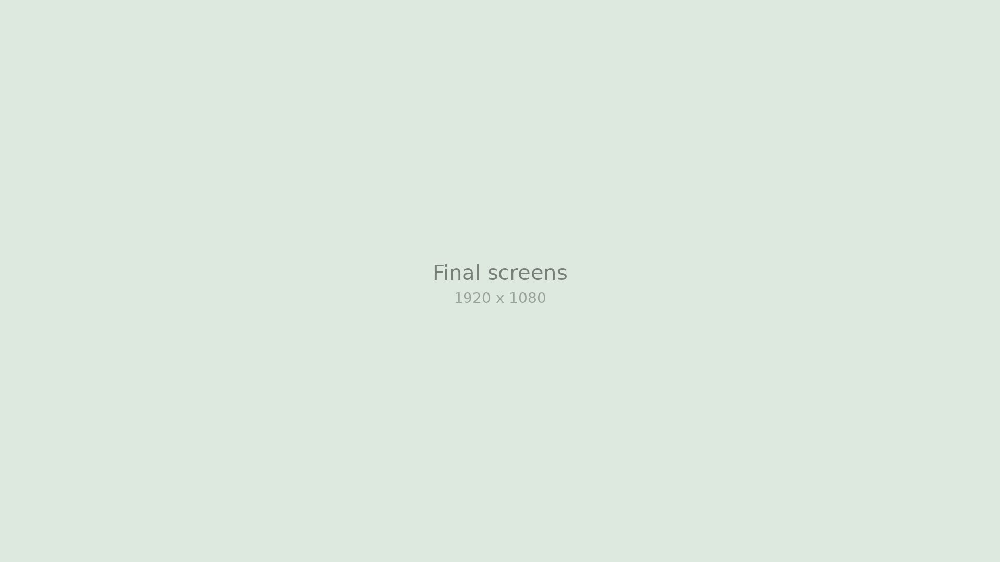
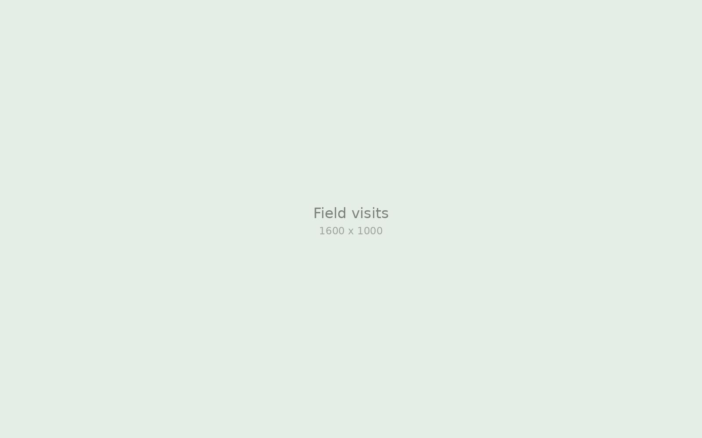
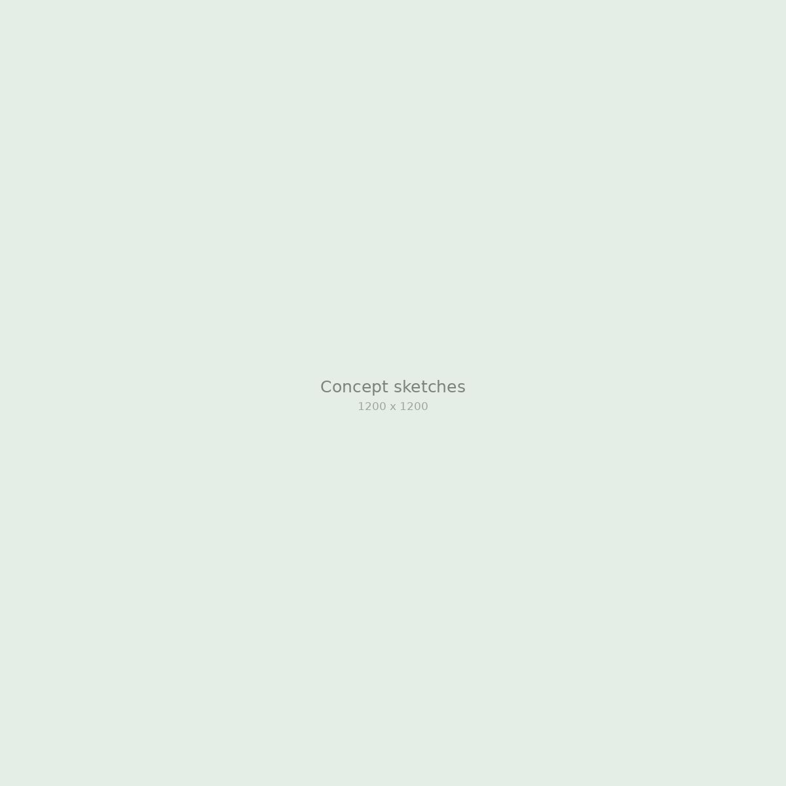
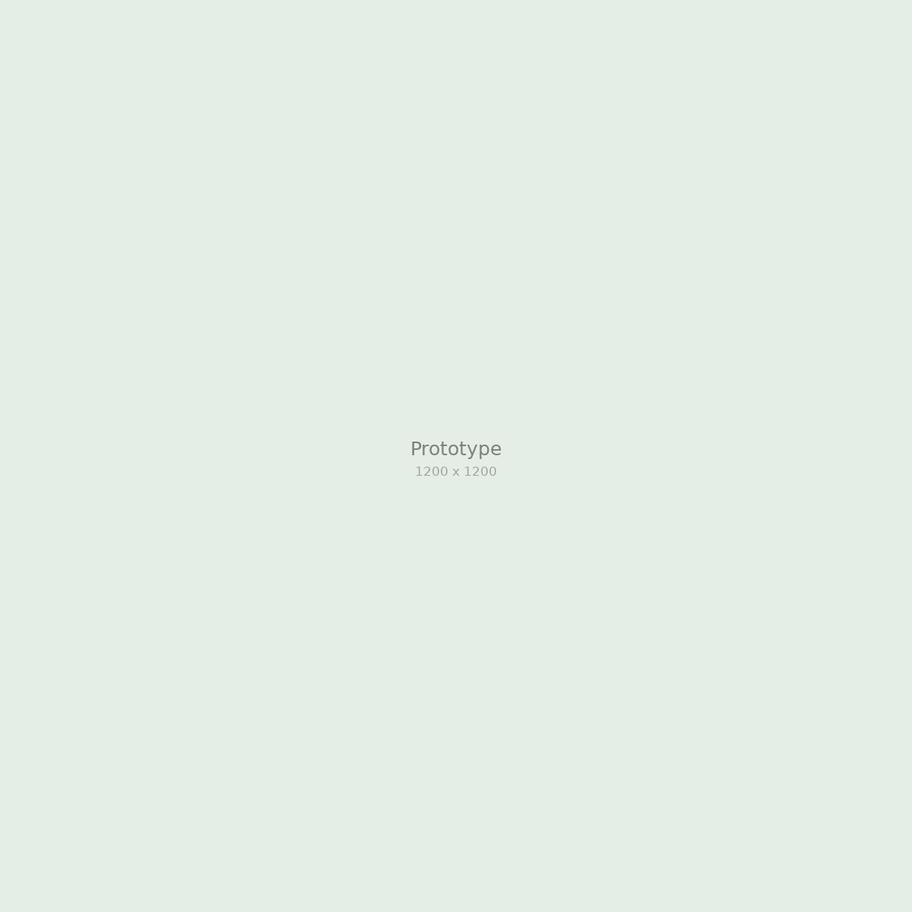

Warungku
Simple bookkeeping for family-run shops, designed with owners who had never used a finance app.

Overview
Warungku is a class project with a local cooperative that supports small neighborhood shops, or warung. Owners wanted to know whether they made money each week, but every app they tried felt like it was built for accountants.
I ran the field research and designed the core sales and debt-tracking flows.
The problem
Most owners tracked sales in a paper notebook, or not at all. Debts from regular customers (kasbon) were written on scraps of paper and often forgotten, which quietly ate into already thin margins.
“Owners did not want reports. They wanted one answer at closing time: did I earn more than I spent today?”
Key insight from owner interviews
Research
We visited shops at different times of day, sat behind the counter, and watched how owners handled sales, restocking, and customer debts.

What we learned
- Owners often had only one free hand, so every input had to work with a thumb.
- Customer debts were the most stressful thing to keep track of.
- Many owners shared a single phone with family members.
Design
We designed around two moments: logging a sale while serving a customer, and checking the day's result at closing time.
Two-tap sales
Frequent items appear as large buttons, so recording a sale takes two taps. Prices use the same short format owners already write in their notebooks.


Debts with a name and a face
Each debt shows the customer's name and photo. When the owner is ready, the app drafts a polite WhatsApp reminder they can send with one tap.
Outcome
Owners tried the prototype during real business hours and kept using the debt list after the test ended.
Used at the counter
Owners could log a sale while serving a customer, without putting anything down.
Handed to the cooperative
Our designs and research notes became the starting point for the cooperative's own app.
Reflection
Designing for people with little experience using apps taught me to remove before adding. Every label we cut made the app easier to trust.